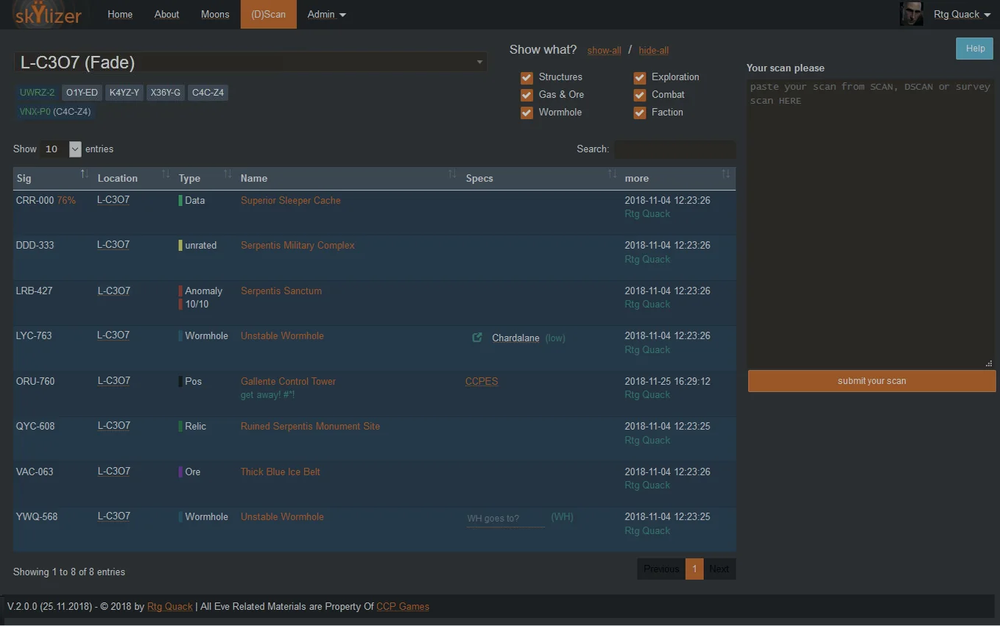
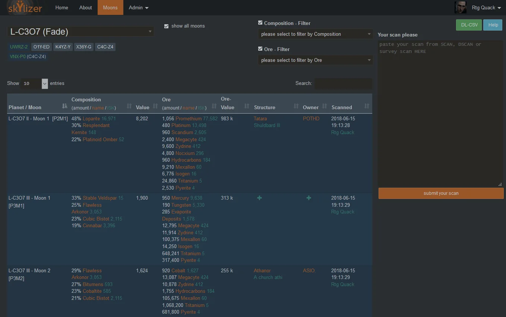
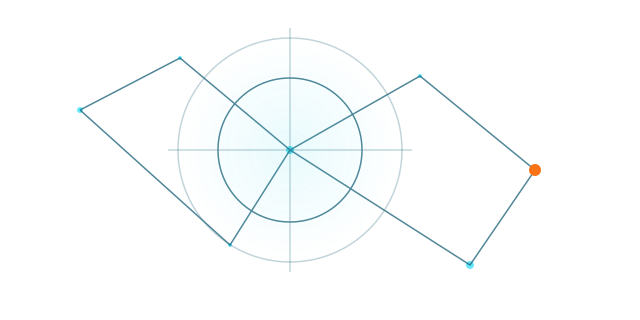
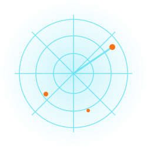

Scan Import & Sharing
Paste scan results directly from the EVE client, retain findings, and share them with authorized users.
NULL SEC NORTH CONTINUATION
The EVE Online Scan Analyzer & Structures Manager
Import, analyze, organize, and share EVE Online moon scans, probe-scanner results, directional-scanner results, corporation structure data, and mining ledgers.
CAPABILITIES
One application for scan ingestion, moon evaluation, structure context, mining-ledger reporting, and controlled information sharing.
Paste scan results directly from the EVE client, retain findings, and share them with authorized users.
Compare composition, quantities, refined materials, and estimated ISK values across surveyed moons.
Identify Upwell structures, towers, infrastructure, names, ownership, notes, and relative positions.
Organize anomalies, signatures, wormholes, exploration sites, combat sites, gas, ore, and faction activity.
Import corporation ledger data, visualize extraction activity, and monitor structure events and fuel deadlines.
Manage character, corporation, alliance, role, permission, allow-list, and deny-list access.
APPLICATION PREVIEWS
The existing application pages are presented inside a darker cyan-and-amber operational interface. The modernization program will progressively replace the legacy UI.

Search, filter, sort, annotate, and share system-level intelligence from a single operational view.

Rank extraction opportunities by composition, value, ownership, refinery context, and survey freshness.
INTERACTIVE TEST CONTENT
| Signature | System | Category | Type | Record | Submitted by |
|---|---|---|---|---|---|
| CRR-000 | L-C307 | Exploration | Data | Superior Sleeper Cache | Rtg Quack |
| DDD-333 | L-C307 | Combat | Unrated | Serpentis Military Complex | Rtg Quack |
| LYC-763 | L-C307 | Wormhole | Unknown | Unstable Wormhole | Rtg Quack |
| ORU-760 | L-C307 | Structure | Control tower | Gallente Control Tower | Rtg Quack |
| VAC-063 | L-C307 | Ore | Ice belt | Thick Blue Ice Belt | Rtg Quack |
Showing 5 of 5 sample records.
Perform a moon, probe, or directional scan in EVE Online.
Copy the result set from the EVE client.
Paste the copied content into skŸlizer.
Store and reconcile the scan with prior intelligence.
Review, filter, sort, annotate, export, and share.
PUBLIC DEMO
TBDA demonstration environment will be linked after the modernized deployment baseline is tested.

INSTALLATION & UPDATES
Setup, upgrades, EVE data maintenance, and release history are maintained in the project wiki.
Release history and modernization notes.
Static data, prices, structures, and ledgers.
Back up, upgrade, validate, and roll back.
Secure deployment and initial configuration.
git clone https://github.com/Null-Sec-North/eve-skylizer.gitCURRENT MODERNIZATION BASELINE
These versions are modernization targets, not a claim that every legacy code path is already compatible.
Validate the selected branch or release against its release notes, dependency lock state, database schema, and representative application tests.

FRAMEWORK & DEVELOPER CAPABILITIES
Search existing issues and discussions first. Keep changes focused, documented, testable, and free of secrets.
View issues ↗Report vulnerabilities privately. Never publish credentials, OAuth tokens, ESI refresh tokens, or corporation-sensitive data.
Private advisory ↗See the canonical repository license for the complete terms.
Read license ↗